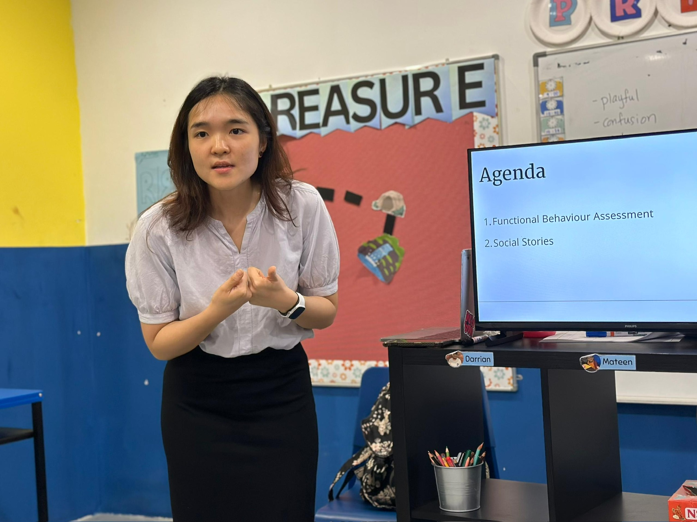
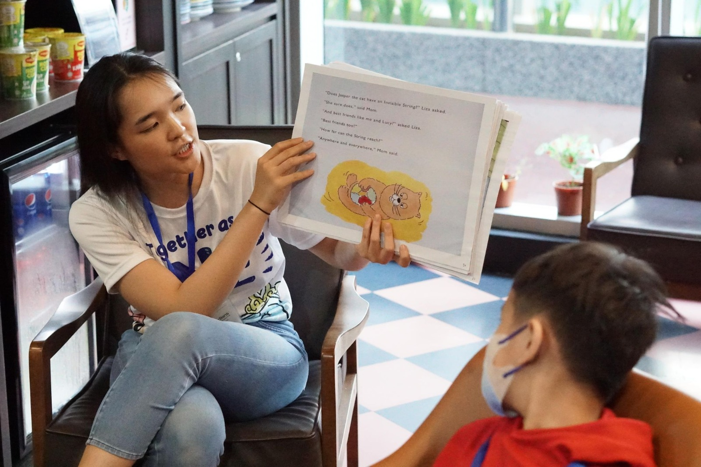

孩子的行为越来越难应对，试过的方法都撑不了多久
您怀疑行为背后另有原因，却说不清是什么
学习需要各不相同的孩子，一起挤在忙碌的课室里
老师们已经分身乏术，想要隔天就能用上的方法
不确定何时该转介孩子，或该把家长带去哪里
希望整个团队对孩子的行为有一套共同的语言
围绕行为、情绪、压力和课堂支持的专业发展课程，针对贵校老师面对的实际情况来设计。
为贵校的家长社群举办的课程，让家庭和课室朝同一个方向努力。
与教育心理学家一起探讨某位孩子或某个班级：个案讨论、应对策略和下一步。
当班上的孩子在我们这里接受评估，给学校的建议会写得让老师能直接照着做。
不确定该把家长带去哪里？请他们联系我们，进行免费咨询电话。我们会坦诚告诉他们，我们是不是合适的人选。
与学校、补习及启发中心、社区组织联合举办工作坊和课程。
教师专业发展 · ArtSense Studio
孩子为什么会有这样的行为，以及教育工作者如何更有效、更有支持性地回应。
教师工作坊 · Rainbow Tuition and Enrichment Center
孩子的情绪、行为和压力，以及实用的课堂支持方法。
教师培训 · Sunnybank Hills Special Needs School
为有不同学习需要的学生，打造更有支持性课室的实用策略。


发一则简短讯息或打个电话：您的学校、课程对象，以及希望获得什么帮助。
主题、时长、形式和对象都与您商定，为您的团队而设，而不是现成的套装。
实用、动手，并以真实的课堂情境为基础，让老师带着马上就能用的方法离开。
费用视时长、形式和人数而定。告诉我们您的需要，我们会为您报价。
视主题和形式而定。告诉我们大约有多少位老师，我们会据此调整课程。
可以。告诉我们老师们正在面对什么，我们会围绕这些来设计课程。
是的。我们为特殊教育学校、补习及启发中心举办过课程，也与主流学校的课室合作。
告诉我们课程的对象，以及您希望获得什么帮助。我们会回复一个建议的形式。
看懂行为背后的原因。